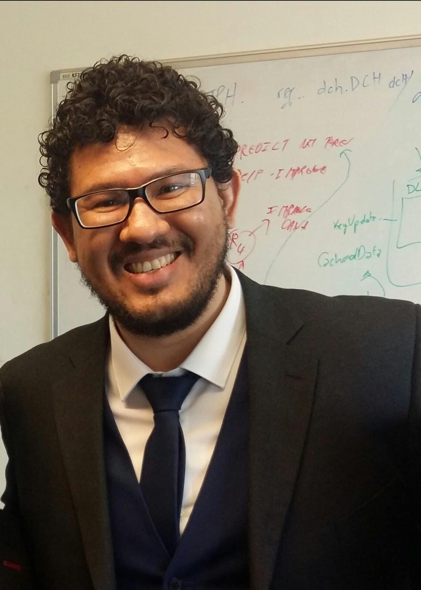

Dr. Roberto Rodrigues Filho
Postdoctoral Researcher
Institute of Informatics
Federal University of Goiás
Goiânia - GO, Brazil
Contact: robertovito [at] ufg.br
News
2022
- Apr/2022: I was awarded an honorable mention for being among the finalists for the Distinguished Artifact Evaluation Committee Member Award at EuroSys'22.
- Mar/2022: We won the Audience Choice Award at ACSOS'21 for our paper "A Programming Language for Sound Self-Adaptive Systems".
- Mar/2022: Our artefact titled "Emergent Web Server: An Exemplar to Explore Online Learning in Compositional Self-Adaptive Systems" was accepted to appear at the 17th Symposium on Software Engineering for Adaptive and Self-Managing Systems (SEAMS'22).
- Feb/2022: Our paper titled "Hatch: Self-distributing Systems for Data Centers", which describes our framework that enables the construction of self-distributing systems, was published at the Future Generation of Computer Systems (FGCS) journal.
2021
- Aug/2021: Next Monday (16/08), I'll be teaching a short course on developing Emergent Software Systems at SBRC'21. If you're attending, come and say hello. The short course comes with a book chapter on the subject, and its content (slides, code, etc.) is available on Github.
- Jul/2021: Our short paper titled "A Programming Language for Sound Self-Adaptive Systems" was accepted to appear at the 2nd IEEE International Conference on Autonomic Computing and Self-Organizing Systems (ACSOS'21).
- May/2021: Our short course on "Emergent Software Systems: Theory and Practice" was accepted to appear at SBRC'21. This short course is accompanied by a book chapter on the subject that describes the main ideas and tools to realise the Emergent Software Systems concept.
2020
- Aug/2020: We won the People's Choice Award at ACSOS'20 for our paper "A Survey of Methodology in Self-Adaptive Systems Research".
- Aug/2020: I am attending the very first edition of ACSOS, which is taking place on Aug 17th to 21st. The conference will be held entirely online. I will personally be presenting our workshop paper in SeAC'20 workshop on Aug 17th, and Dr. Barry Porter is presenting our paper on Aug 18th. If you are also attending, come and say hello!
- Jul/2020: Our workshop paper "Autonomous State-Management Support in Distributed Self-adaptive Systems" was accepted to be presented at the 4th Workshop on Self-Aware Computing (SeAC'20), co-located with ACSOS'20.
- Jul/2020: Our paper "A Survey of Methodology in Self-Adaptive Systems Research" was accepted to be presented at the 1st IEEE International Conference on Autonomic Computing and Self-Organizing Systems (ACSOS'20).
- Jul/2020: I am thrilled to take up a Postdoctoral Researcher position at the Institute of Informatics in the Federal University of Goiás, Brazil. I will be working with Prof. Fábio Costa on an exciting project involving Emergent Software Systems and Smart Cities. São Paulo Research Foundation (FAPESP) is fully funding this position under the InterSCity project.
- Jun/2020: My contract as Research Associate in Lancaster University has officially come to an end.
2019
- Oct/2019: I am delighted to be giving a talk to VERLab at the Federal University of Minas Gerais (UFMG). The talk will take place at the ICEx building on Oct 25th at 2 PM. Many thanks to Prof. Leandro Marcolino (Lancaster University) and Prof. Luiz Chaimowicz (UFMG) for organising this.
- Sept/2019: The Federal University of Minas Gerais (UFMG) officially validated my Ph.D. certificate from Lancaster University. My diploma is now valid and formally recognised as a Ph.D. diploma for all legal purposes in Brazil.
- Jun/2019: This summer (July-Sept) I will be visiting Prof. François Taïani's research group in Rennes, France.
- May/2019: I am attending SASO'19 conference in Umea, Sweden, on Jun 16th to 20th. I will be presenting a full paper in the main conference, a workshop paper in the SISSY workshop and a tutorial on the last day. If you are around, come and say hello!
- Jan/2019: Dr. Barry Porter and I are teaching a summer school on Emergent Software Systems at the Institute of Informatics in the Federal University of Goiás in Brazil. The course starts on Jan 28th and finishes on Feb 22nd 2019 (southern hemisphere summer).